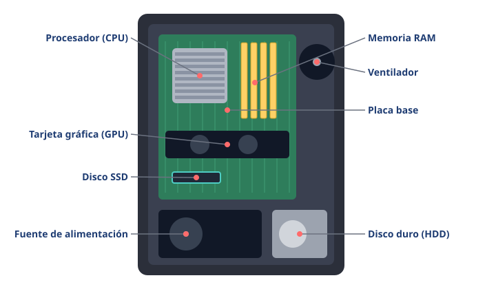

Módulo 2: Hardware: el ordenador por dentro
Conoce las piezas principales y para qué sirve cada una.
Informática básica · Módulo 2 de 12
¿Qué hay dentro de la caja?
Si abrimos un ordenador de sobremesa encontramos varias piezas conectadas a una gran tarjeta llamada placa base. En un portátil o un móvil están las mismas piezas, pero mucho más pequeñas y juntas.

Las piezas principales de un ordenador de sobremesa.
| Pieza | Qué hace | Compáralo con… |
|---|---|---|
| Placa base | Conecta todas las piezas entre sí. | Las calles de una ciudad. |
| Procesador (CPU) | Ejecuta las instrucciones de los programas. | El cerebro. |
| Memoria RAM | Guarda lo que estás usando ahora. Se borra al apagar. | La mesa de estudio: cuanto más grande, más cosas abiertas a la vez. |
| Almacenamiento (SSD/HDD) | Guarda archivos y programas aunque se apague. | La estantería o el armario. |
| Tarjeta gráfica (GPU) | Calcula las imágenes que ves (juegos, vídeo, 3D). | Un artista especializado en dibujar. |
| Fuente de alimentación | Transforma la corriente del enchufe para las piezas. | El corazón que reparte energía. |
| Ventiladores y disipador | Evitan que las piezas se calienten demasiado. | El aire acondicionado. |
RAM no es lo mismo que almacenamiento. Un móvil «de 8 GB de RAM y 256 GB» tiene 8 GB para trabajar con lo que tienes abierto y 256 GB para guardar fotos, apps y archivos.
¿Qué hace que un ordenador vaya rápido?
- ⚡ Un procesador moderno con varios núcleos (trabajadores en paralelo).
- ⚡ Suficiente RAM para lo que usas (hoy, 8 GB como mínimo; 16 GB va holgado).
- ⚡ Un SSD en lugar de un disco duro mecánico: arranca y abre programas mucho antes.
🧩 Tienes muchas pestañas y programas abiertos y todo va lento. ¿Qué pieza se está quedando corta probablemente?
🧩 ¿Qué pieza conserva tus fotos aunque apagues el ordenador?
Resumen: placa base (conecta), CPU (piensa), RAM (trabajo del momento), almacenamiento (guarda), GPU (imágenes), fuente (energía) y refrigeración (temperatura).